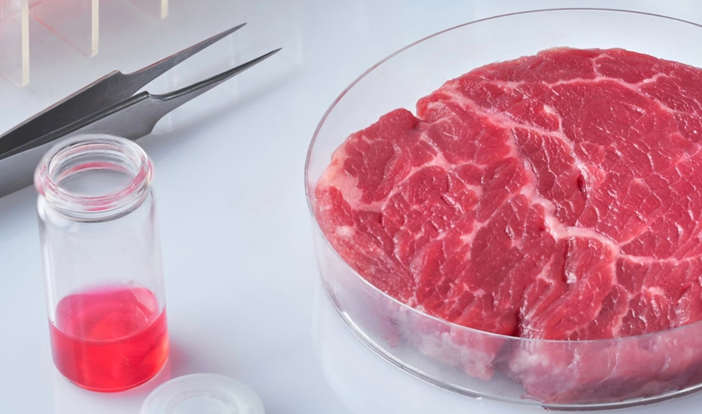
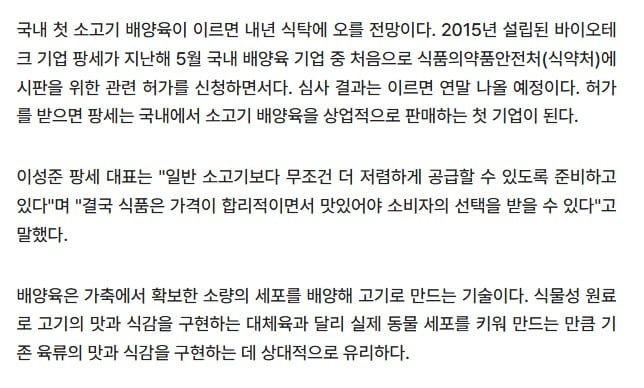
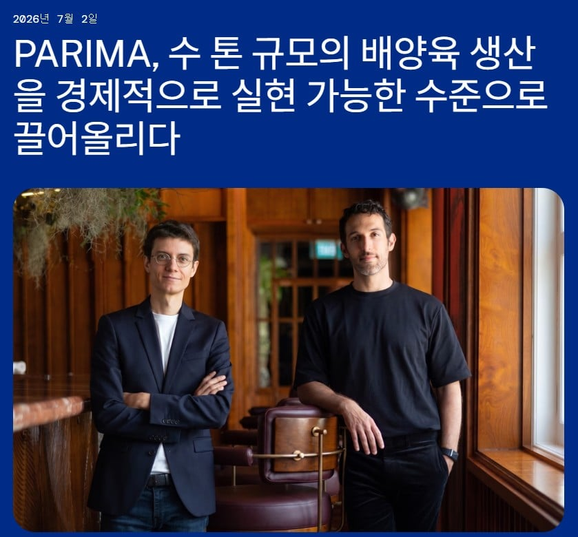
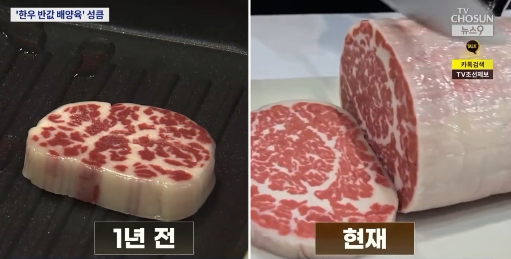
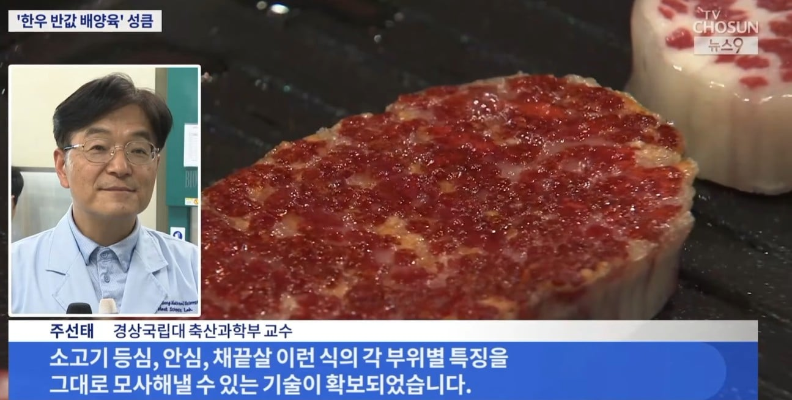

비욘드미트나 임파서블 푸드 같은 대체육(콩고기) 기업들이 망해가고 있을 때 배양육 기업들은 슬슬 시장진출 준비 중
빠르면 내년 혹은 2028년부터 시중에 배양육들이 나올 것으로 보임





비욘드미트나 임파서블 푸드 같은 대체육(콩고기) 기업들이 망해가고 있을 때 배양육 기업들은 슬슬 시장진출 준비 중
빠르면 내년 혹은 2028년부터 시중에 배양육들이 나올 것으로 보임
단가는 낮춰도 생산량이 가능할까 싶네
공장식으로 탱크에넣고 뿔리는데 무제한생산되지
CAPA를 말하는거임
1초에 60억명 먹을만큼 생산하겠냐고
지금 훨씬 비효율적인 소들도 잘 멕이고 있으니 수요만 확실하면 조금씩늘리겠지 지금 당장 1초뒤에 먹을게 모두사라지는것도 아닌데 왤케 걱정이 심해
심하게 걱정한적 없는데
저런
1초에 60억명 먹을 만큼
생산되는게 세상에 있냐?
닭고기도 1초에 60억명은 못먹어
예?? 1초마다 60억명이 밥을먹어요!?
절 대 바퀴벌레를 먹지않겠다는 의지
비욘드미트 씨발새끼들..............내주식다녹인건 지금의 세태가 아니라 저 개씹스캠주때문이었다...........
사기 전에 맛은 봄? ㅋㅋ
맛있겠당
기사에서 말하는 가격과 실제 가격이 많이 다를 가능성이 크다...
배양육이 실제 고기보다 싸게 내려가는 건 먼 미래의 이야기일듯
이제 먹고 좀비가 되는 시대가 온 것인가...
"한우보다 반값"
맛이 있으려나? 소고기 맛이 단순히 저런 세포 배양 뿐만이 아니라 안에 있는 소 자체의 호르몬, 혈액성분 이런것들도 포함 될텐데... 석박사님들 열심히 갈려나가는 중이시니 어케든 되겠지...?
절대 바퀴벌레 먹을 수 없어
오 이지비프